Eleven (El)
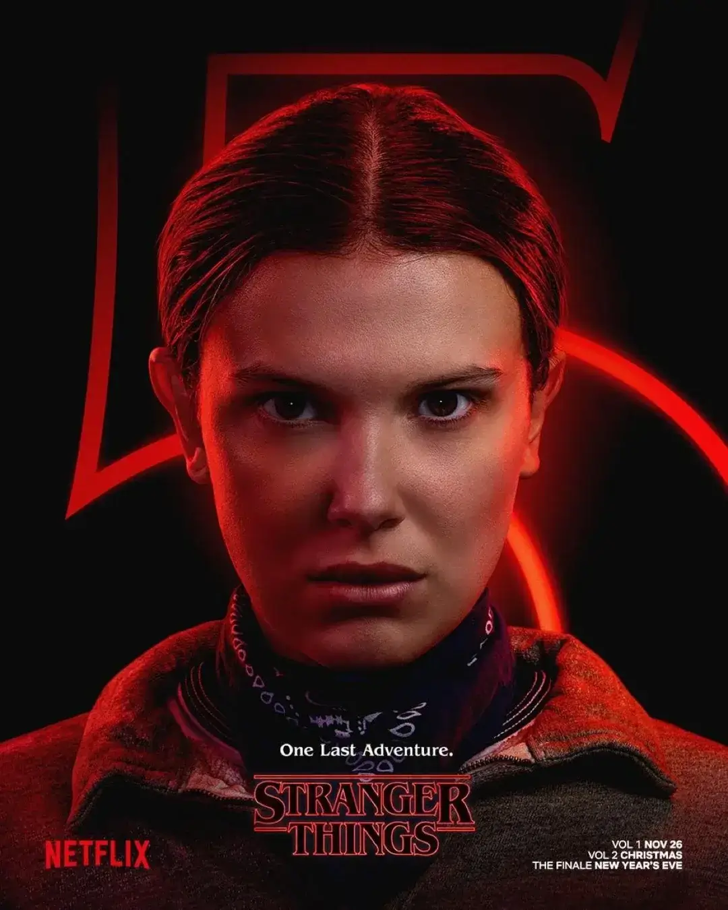A young girl with psychokinetic and telepathic abilities who escaped from Hawkins National Laboratory. She is fiercely loyal to her friends and has a deep connection to the Upside Down.
Mike Wheeler
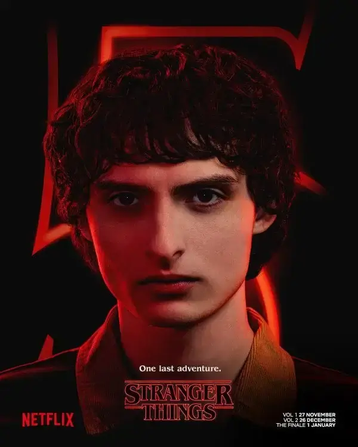The leader of the main group of friends. He is intelligent, compassionate, and becomes Eleven's boyfriend. He is a driving force in the search for Will.
Dustin Henderson
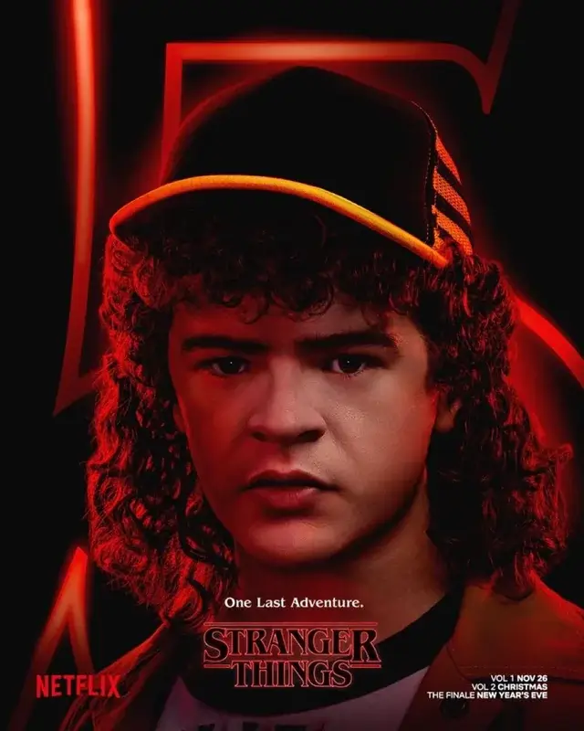Known for his optimism and lisp. Dustin is the group's science and logic expert, often coming up with clever solutions to their supernatural problems.
Will Byers
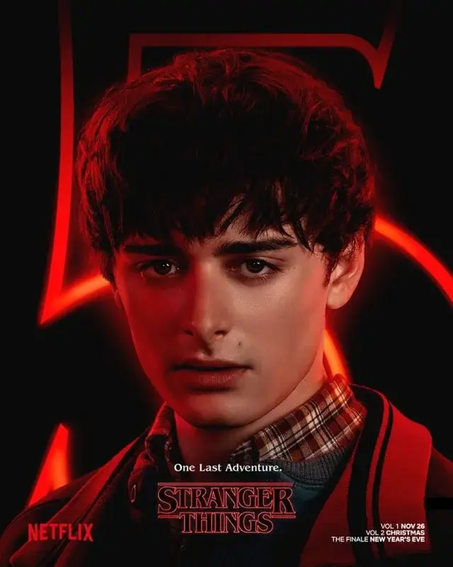The boy who disappears in Season 1, drawing his friends and family into the mysteries of the Upside Down. He is often targeted by the creatures of the other dimension.
Jim Hopper
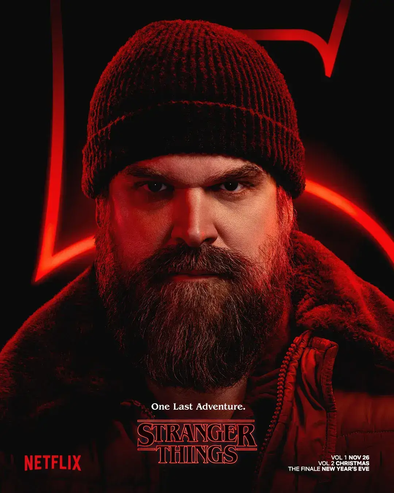The Chief of Police in Hawkins. A gruff but dedicated man who helps Joyce and the children uncover the truth behind the town's strange happenings.
Joyce Byers
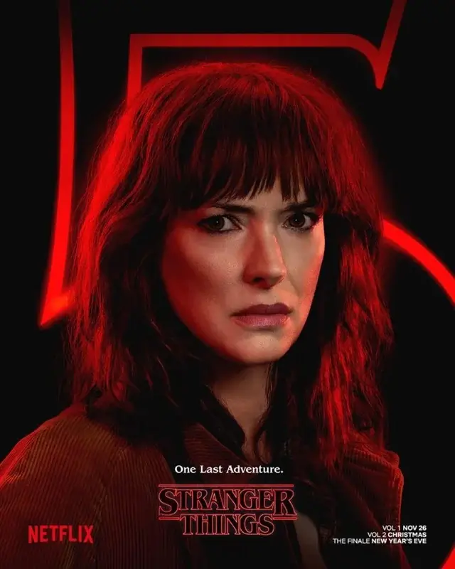Will and Jonathan's mother. She is fiercely determined and intuitive, recognizing the supernatural threat long before anyone else, driven by her love for her children.
Nancy Wheeler
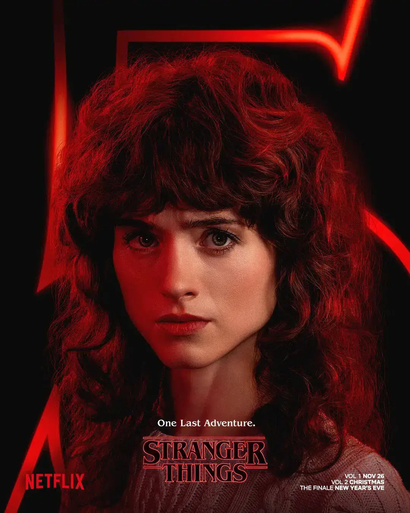Mike's older sister. She transforms from a typical high schooler into a dedicated investigative journalist and an expert with guns.
Steve Harrington
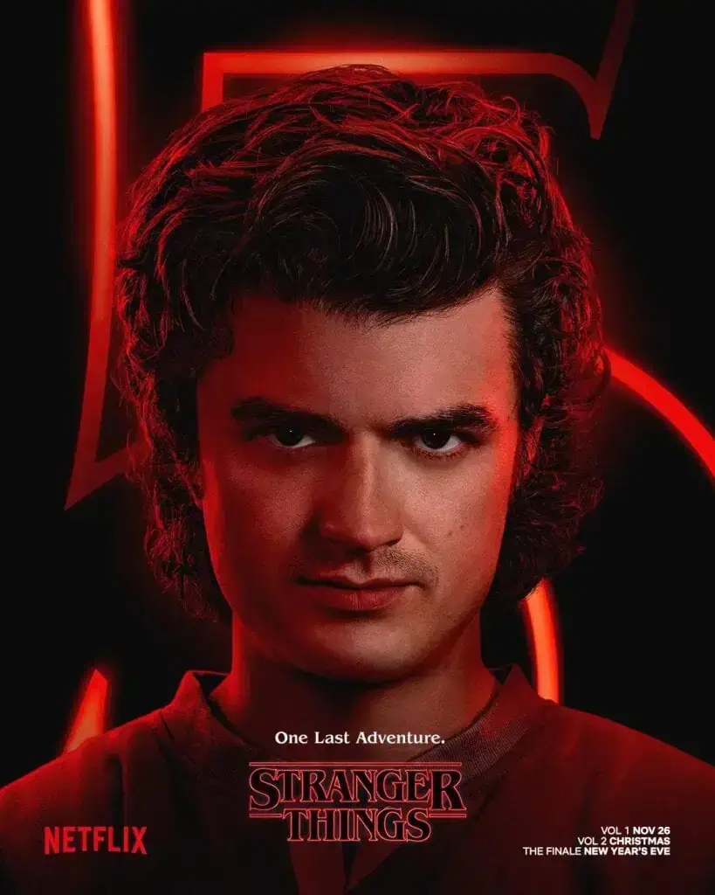Initially a popular high school jock, Steve develops into a key protector and mentor for the younger kids. He is affectionately known as "The Babysitter" of the group.
Jonathan Byers
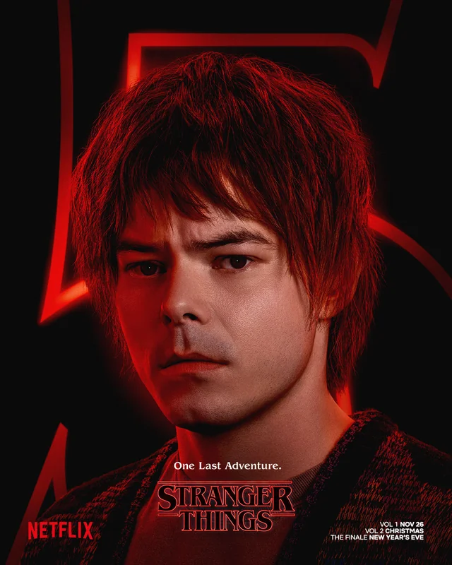Will's older brother. An outsider and aspiring photographer, he is protective of his family and often teams up with Nancy to investigate the supernatural events.
Max Mayfield
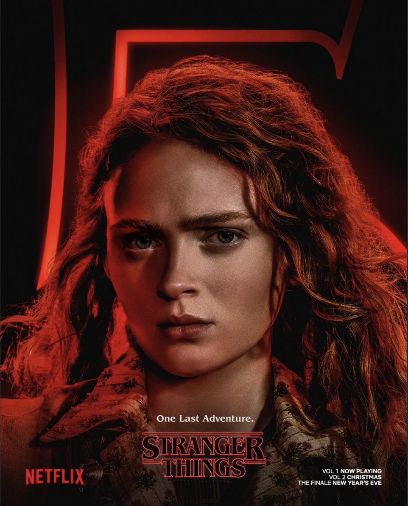A new student and skilled arcade gamer. She is initially skeptical of the group's supernatural claims but eventually becomes a fierce and loyal member of the Hawkins crew.
Lucas Sinclair
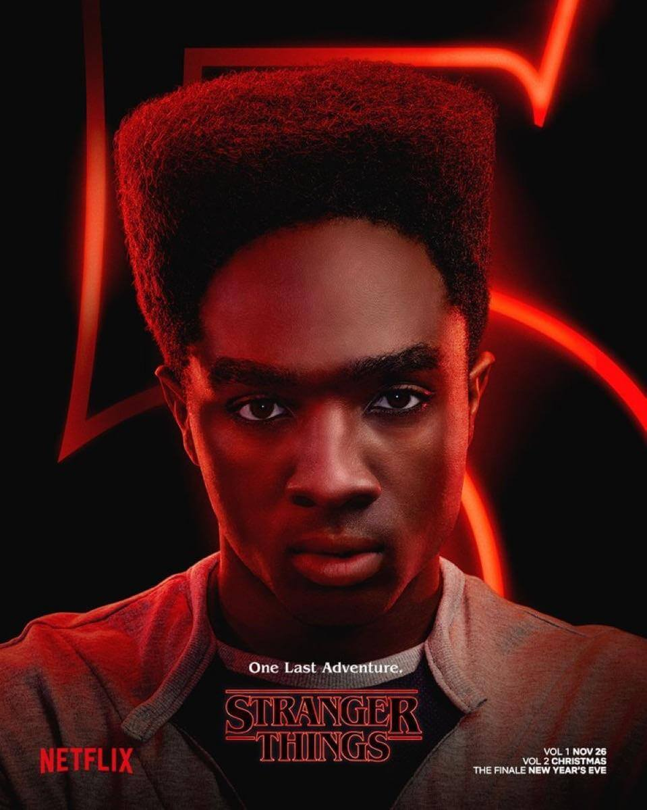The realist and most cautious member of the original friends group. He is a strong member of the group and is dating Max
Murray Bauman
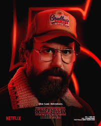A private investigator and conspiracy theorist who often helps the main characters uncover government secrets and Russian plots. He is eccentric but highly resourceful.
Robin Buckley
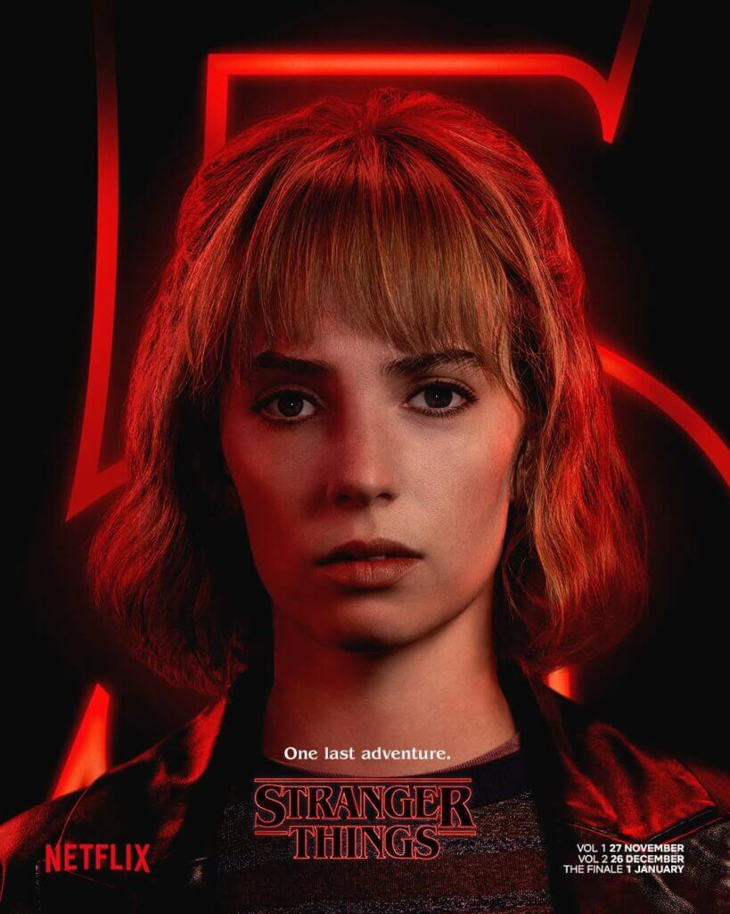Steve's witty and sardonic coworker from Scoops Ahoy. She is multilingual, highly observant, and plays a crucial role in uncovering the Russian bunker beneath Starcourt Mall.
Erica Sinclair
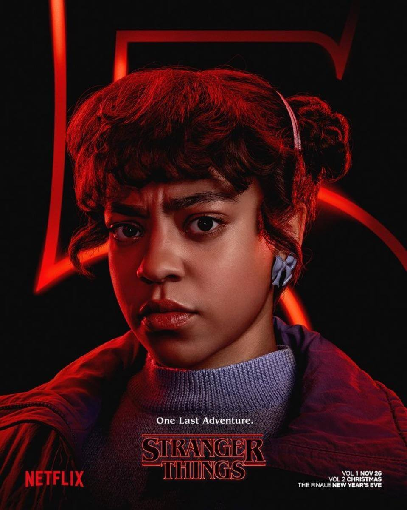Lucas's younger sister. Known for her sharp wit and fearless attitude, she